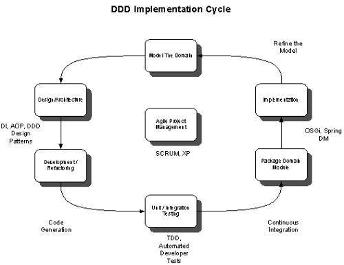
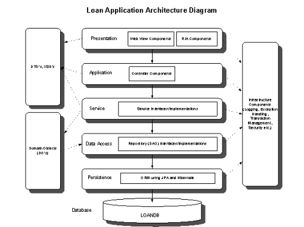
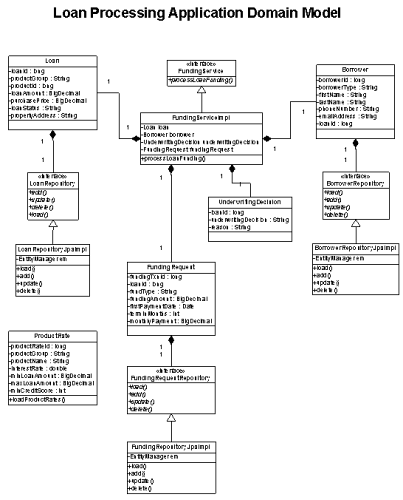

领域驱动设计（DDD）的中心内容是如何将业务领域概念映射到软件工件中。大部分关于此主题的着作和文章都以Eric Evans的书《领域驱动设计》为基础，主要从概念和设计的角度探讨领域建模和设计情况。这些着作讨论实体、值对象、服务等DDD的主要内容，或者谈论通用语言、界定的上下文（Bounded Context）和防护层（Anti-Corruption Layer）这些的概念。
本文旨在从实践的角度探讨领域建模和设计，涉及如何着手处理领域模型并实际地实现它。我们将着眼于技术主管和架构师在实现过程中能用到的指导方针、最佳实践、框架及工具。领域驱动设计和开发也受一些架构、设计、实现方面的影响，比如：
本文讨论这些不同的因素在项目实施的整个生命周期中怎样对其产生影响，还有架构师在实现成功的DDD中应该去寻求什么。我会先列出领域模型应该具备的典型特征，以及何时在企业中使用领域模型（相对于根本不使用领域模型，或使用贫血的领域模型来说）。
文章包括一个贷款处理示例应用，来演示如何将设计立场、以及这里讨论的开发最佳实践，应用在真实的领域驱动开发项目之中。示例应用用了一些框架去实现贷款 处理领域模型，比如Spring、Dozer、Spring Security、JAXB、Arid POJOs和Spring Dynamic Modules。示例代码用Java编写，但对大多数开发人员来说，不论语言背景如何，代码都是很容易理解的。
领域模型带来了一些好处，其中有：
反过来，如果IT团队在开发大中型企业软件应用时不遵循领域模型方法，我们看看会发生些什么。
不投放资源去建立和开发领域模型，会导致应用架构出现“肥服务层”和“贫血的领域模型”，在这样的架构中，外观类（通常是无状态会话Bean）开始积聚越 来越多的业务逻辑，而领域对象则成为只有getter和setter方法的数据载体。这种做法还会导致领域特定业务逻辑和规则散布于多个的外观类中（有些 情况下还会出现重复的逻辑）。
在大多数情况下，贫血的领域模型没有成本效益；它们不会给公司带来超越其它公司的竞争优势，因为在这种架构里要实现业务需求变更，开发并部署到生产环境中去要花费太长的时间。
在考虑DDD实现的项目中各种架构和设计因素之前，让我们先看看富领域模型的特性：
为了实现软件开发中更高的投资回报率（ROI），业务单位和IT的高级管理人员必须在业务领域建模及其实现的投资上（时间、金钱和资源）全力以赴。让我们来看看实现领域模型需要的其它因素。
领域建模和DDD在企业架构（EA）中发挥着重要的作用。因为EA的目标之一就是结合IT和业务部门，业务实体的代表——领域模型就是EA的核心部分。这就是为什么大多数EA组件（业务或基础设施）应该围绕领域模型设计和实现的原因。
面向服务的体系架构（SOA）最近帮助团队构建基于业务流程的软件构件和服务、加速新产品上市时间的势头越来越强劲。领域驱动设计是SOA的一个关键因素，因为它有助于封装领域对象中的业务逻辑和规则。领域模型也提供了定义服务契约使用的语言和上下文。
如果还没有领域模型，SOA的实行就应该包括领域模型的设计和实现。如果我们太过强调SOA服务、忽略了领域模型的重要性，那我们在应用架构中最终得到的就是一个贫血的领域模型和臃肿的服务。
理想的情况是，在开发应用层和SOA组件的同时，迭代地实现DDD，因为应用层和SOA组件都是领域模型要素的直接消费者。使用丰富的领域实现，通过给领 域对象提供一个壳（代理），SOA设计将变得相对简单。但如果我们太过于关注SOA层，在后端却没有一个像样的领域模型，业务服务就会调用不完整的领域模 型，这可能会导致出现一个脆弱的SOA架构。
领域建模项目通常包括以下步骤：
一开始关注业务领域核心元素的时候，就将模型保持在高水平是非常重要的。
从项目管理的观点来看，真实的DDD实现项目和其它软件开发项目所包含的阶段是一样的。这些阶段包括：
非常适合在这里使用敏捷软件开发方法学，因为敏捷方法注重于交付商业价值，恰好DDD侧重于结合软件系统和业务模型。此外，就DDD迭代的特性来 说，SCRUM或DSDM这样的敏捷方法对项目管理来说也是更好的框架。结合使用SCRUM（适用于项目管理）和XP（适用于软件开发目标）方法对处理 DDD实现项目来说非常好。
DDD迭代周期的项目管理模型如图1所示

http://www.uml.org.cn/mxdx/images/2052400.gif
图1. DDD迭代周期图
领域建模结束时可以开始领域驱动设计。关于如何开始实现领域对象模型，Ramnivas Laddad推荐如下的步骤。他强调要更侧重于领域模型中的领域对象，而不是服务。
从设计和实现的角度来看，典型的DDD框架应该支持以下特征。
本文中使用的示例应用是一个住房贷款处理系统，业务用例是批准住房贷款（抵押）的资金申请。将贷款申请提交给抵押放贷公司的 时候，首先要通过承保过程，承保人在这一过程中根据客户的收入详情、信用历史记录和其它因素来决定批准还是拒绝贷款请求。如果贷款申请获得承保组的批准， 就进入贷款审批程序的结清和融资步骤。
贷款处理系统中的融资模块自动给贷款人支付资金。通常，融资过程从抵押放贷公司（通常是银行）将贷款包递交给产权公司开始。接着产权公司评估贷款包，并与房产买卖双方一起确定结清贷款的时间。贷款人和卖方与结算中介在产权公司会面、签署书面协议，来转移房产产权。
典型的企业应用架构由下面四个概念上的层组成：
让我们更详细地看一下应用层和领域层。应用层：
领域层：
下面的图2显示了应用中使用的不同架构层次，以及它们与DDD有怎样的关系。

http://www.uml.org.cn/mxdx/images/2052401.gif
图2. 多层应用架构图
下面的设计观点被认为是目前DDD实现诀窍的主要部分：
OOP是领域实现中最重要的基本原则。应该利用像继承、封装和多态这样的OOP概念，使用Plain Java类和接口来设计领域对象。大部分领域元素是既有状态（属性）又有行为（操作状态的方法或操作）的真正对象。它们同时对应于真实世界的概念，能很合 适地适用于OOP概念。DDD中的实体和值对象都是OOP概念的典型例子，因为它们同时有状态和行为。
在典型的工作单元（UOW）中，领域对象需要与其它的对象协作，无论这些对象是服务、资源库、还是工厂。领域对象还需要处理其它那些本身就横切的关注点， 比如领域状态变化跟踪、审计、缓存、事务管理（包括事务重试）。这些都是可重用、非领域相关的关注点，通常很容易在包括领域层的整个代码中散布和重复。在 领域对象中嵌入该逻辑会导致领域层和非领域相关的代码互相纠缠、产生混乱。
说到处理对象间之没有紧耦合的代码依赖关系和隔离横切关注点的时候，OOP并不能独自为领域驱动设计和开发提供极好的设计解决方案。在这是可以利用DI和AOP这样的设计概念对OOP进行补充，以尽量减少紧耦合、提高模块化、更好地处理横切关注点。
DI能很有效地将配置和依赖代码从领域对象中移出。此外，领域类对数据访问对象（DAO）类、服务类对领域类的设计依赖性使得DI成为DDD实现中“必须有”的内容。通过将资源库和服务之类的其它对象注入到领域对象，DI有助于创建一个更清晰、松耦合的设计。
在示例应用中，服务对象（FundingServiceImpl）利用DI注入实体对象（Loan、Borrower和FundingRequest）。实体也通过DI引用资源库。同样的，像数据源、Hibernate会话工厂和事务管理器这些其它的Java EE资源也被注入到服务和资源库对象中。
通过从领域对象中移除横切关注点代码，比如检查、领域状态变化跟踪等，AOP有助于实现一个更好的设计（即在领域模型中少一些乱七八糟的内容）。可利用 AOP把协同对象和服务注入领域对象，特别是那些容器没有实例化的对象（比如持久化对象）。在可以利用AOP的领域层中，其它的方面有缓存、事务管理和基 于角色的安全（授权）。
贷款处理应用利用自定义方面将数据缓存引入服务对象。贷款产品和利率信息从数据库表中加载一次（客户端第一次请求这些信息时），然后存储到适用于后面产品和利率查找的对象缓存（JBossCache）中。产品和利率会被频繁访问，但不会定期更新，所以缓存数据是一个很好的候选方案，而不是每次都从后端的数据库获取。
在近期的讨论贴子里，DDD中DI和AOP概念的作用是主要的话题。讨论以Ramnivas Laddad的演讲为基础，Ramnivas在其演讲中主张，没有AOP和DI的帮助，DDD无法实现。 Ramnivas在这个演讲中讨论了“细粒度DI”的概念，这一概念利用AOP使领域对象恢复机敏性。他说领域对象需要访问其它细粒度的对象来提供丰富的 行为，该问题的解决方案是在领域对象中注入服务、工厂或资源库（通过在调用构造或setter方法时期使用方面来注入依赖）。
Chris Richardson也讨论了有关利用DI、对象和方面，通过减少耦合、提高模块化来改进应用设计。Chris谈到了“超级大服务”反模式，这是应用代码耦合、混乱、分散的结果，他还谈了如何利用DI和AOP的概念来避免这一反模式。
最近定义、处理方面和DI的趋势是使用注解。对实现远程服务（比如EJB或Web Services）来说，注解有助于减少所需的工件。它们还简化了配置管理任务。Spring 2.5、Hibernate 3，以及其它框架都充分利用注解在Java企业应用的不同层中配置组件。
我们应该利用注解生成模板代码，模板代码能在灵活性上增加价值。但同时应该谨慎使用注解。注解应该用于不会引起混淆或误解实际代码的地方。使用注解的一个 很好的例子是Hibernate ORM映射，注解能直接用类或属性名给指定的SQL表或列名添加值。另一方面，像JDBC驱动配置（驱动类名、JDBC URL、用户名和密码）这样的详细信息则更适合于存放在XML文件中，而不是使用注解。这基于数据库在同一个上下文中这一假设。如果领域模型和数据库表之 间需要相当多的转换，那就应该好好思考一下设计了。
Java EE 5提供JPA注解，比如@Entity、@PersistenceUnit、@PersistenceContext等，以此给简单的Java类添加持久化细节。在领域建模上下文中，实体、资源库和服务都是使用注解的好地方。
@Configurable是 Spring将资源库和服务注入领域对象的方式。Spring框架在@Configurable注解之上扩展了“领域对象依赖注入”思想。 Ramnivas最近在博客中谈论了即将发布的Spring 2.5.2版本（从项目的Snapshot Build 379开始可用）的最新改进。 有三个新的方面（AnnotationBeanConfigurerAspect、 AbstractInterfaceDrivenDependencyInjectionAspect和 AbstractDependencyInjectionAspect）为领域对象依赖注入提供了简单、更灵活的选择。Ramnivas说，引入中间的方 面（AbstractInterfaceDrivenDependencyInjectionAspect），其主要原因是要让领域特定的注解和接口发挥 作用。Spring还提供了其它注解来帮助设计领域对象，比如@Repository、@Service和@Transactional。
示例应用中使用了部分注解。实体对象（Loan、Borrower和FundingRequest）使用了@Entity注解；这些对象还使用@Configurable注解绑定资源库对象；服务类也使用@Transactional注解来用事务行为装饰服务方法。
领域层的应用安全确保只有授权的客户端（人类用户或其它应用）能调用领域操作，访问领域状态。
Spring安全（Spring Portfolio的一个子项目）同时为应用的表现层（以URL为基础）和领域层（方法级）提供了细粒度的访问控制。该框架使用Spring的Bean Proxy来拦截方法调用，运用安全约束。它为使用MethodSecurityInterceptor类的Java对象提供了基于角色的声明式安全。它也有针对领域对象的访问控制列表（ACL's）形式的实例级别安全，以控制实例级别的用户访问。
在领域模型中使用Spring安全来处理授权需求的主要好处是，框架有一个非侵入式的架构，我们可以完全隔离领域和安全方面。此外，业务对象也不会和安全实现细节混成一团。我们可以只在一个地方编写通用的安全规则，（使用AOP技术）在任何需要实现它们的地方运用它们。
在领域和服务类中，授权在类方法调用级别进行处理。举例来说，对于高达一百万美元的贷款，承保领域对象中的“贷款审批”方法可以由任何具有“承保人”角色 的用户调用；而对于超过一百万美元的贷款申请来说，同一领域对象中的审批方法则只能由具有“核保主管”角色的用户调用。
下表简要说明了应用架构每一层中应用的各种安全关注点。
表1. 各个应用层中的安全关注点
| 层 | 安全关注点 |
|---|---|
| 客户端/控制器 | 认证、Web页面（URL）界别授权 |
| 外观 | 基于角色的授权 |
| 领域 | 领域实例级别授权、ACL |
| 数据库 | DB对象级别授权（存储过程、存储函数、触发器） |
业务规则是业务领域中的重要部分。它们定义了数据验证和其它的约束规则，这些规则需要应用于特定业务流程场景中的领域对象。业务规则通常分为下面几类：
上下文在DDD世界中非常重要。上下文的特性决定了领域对象协作及其它运行时因素，比如运用什么业务规则等。验证以及其它业务规则往往都是在一个特定的业 务上下文中处理的。这意味着，相同的领域对象在不同的业务上下文中将不得不处理不同的一组业务规则。比如说，通过了贷款审批流程中的承保步骤后，贷款领域 对象的一些属性（像贷款数额和利率）就不能再改变了。但在贷款刚刚登记并与特定利率关联的时候，同样的属性是可以改变的。
尽管所有的领域特 定业务规则都应该封装在领域层，但一些应用设计将规则放在了外观类中，这导致了领域类在业务规则逻辑方面变成了“贫血的”。在小型应用中这可能是可接受的 解决方案，但不推荐将其用于包含复杂业务规则的中大型企业应用。更好的设计方案是把规则放在它们应该在的地方——领域对象中。如果一个业务规则 跨越两个或两个以上的实体对象，那么该规则应该做为服务类的一部分。
此外，如果我们不在应用中下苦功，往往把业务规则变成代码里的一串switch语句。随着规则变得越来越复杂，开发人员不会愿意花费时间去重构代码，将 switch语句移到更易于管理的设计中。在类中硬编码复杂的流向或决策规则逻辑会导致类中出现更长的方法、代码重复、最终僵化的应用设计，长远来看，这 将成为维护的噩梦。一个良好的设计是把所有的规则（特别是随着业务策略的变化而频繁改变的复杂规则）放到规则引擎（利用规则框架，比如JBoss Rules、OpenRules或Mandarax）中去，并从领域类中进行调用。
验证规则通常会用不同的语言实现，比如Javascript、XML、Java代码，还有其它脚本语言。但由于业务规则的动态特性，Ruby、Groovy、领域特定语言（DSL） 这些脚本语言是定义、管理这些规则更好的选择。Struts（应用层）、Spring（服务层）和Hibernate（ORM）都有其自己的验证模块，我 们可以在这些验证模块中对传入或传出的数据对象运用验证规则。在一些情况下，验证规则还能被处理为方面，它们可以组合到应用的不同层次中去（比如服务和控 制器）。
在编写领域类处理业务规则时，紧记单元测试方面是非常重要的。规则逻辑中的任何变化都应该很容易、独立地单元可测。
示例应用包括一个业务规则集来验证贷款特性是否都在允许的产品和利率规格内。规则在脚本语言中（Groovy）进行定义，并用于传递给FundingService对象的贷款数据。
从设计的角度出发，领域层应该有一个定义清晰的边界，以避免来自非核心领域层关注点的层的损坏，比如特定供应商的说明、数据过滤、转换等。领域元素应该设 计为正确地保存领域状态和行为。不同的领域元素会基于状态和行为进行不同的结构化。下面的表2展示了领域元素及其包含的内容。
表2. 领域元素及其状态和行为
| 领域元素 | 状态/行为 |
|---|---|
| 实体、值对象、聚合 | 状态和行为都有 |
| 数据传输对象 | 只有状态 |
| 服务、资源库 | 只有行为 |
同时包含状态（数据）和行为（操作）的实体、值对象、聚合应该有定义清晰的状态和行为。同时，该行为不应该超出对象边界的范围。实体应该在作用于本地状态的用例中完成大部分工作。但它们不应该知道太多无关的概念。
对那些封装领域对象状态所需要的属性来说，好的设计实践是只包括这些属性的getter/setter方法。设计领域对象时，只为那些能改变的属性提供setter方法。此外，公有的构造函数应该只含有必需的属性，而不是包含领域类中所有的属性。
在大部分用例中，我们并不是真的要去直接改变对象的状态。所以，代替改变内部状态的做法是，创建一个带有已改变状态的新对象并返回该新对象。这种方法在这些用例中就足够了，还能降低设计的复杂性。
聚合类对调用者隐藏了协作类的用法。聚合类可用来封装领域类中复杂的、有侵入性的、状态依赖的需求。
有几种有助于领域驱动设计和开发的设计模式。下面是这些设计模式的列表：
在DDD中应用的其它设计模式还包括策略模式、外观模式和工厂模式。Jimmy Nilsson在他的书里讨论了工厂模式，认为它是一种领域模式。
在最佳实践和设计模式的反面，架构师和开发人员在实现领域模型时还应该提防一些DDD的坏气味。由于这些反模式，领域层在应用架构中成为最不重要的部分，外观类反而在模型中承担了更重要的责任。下面是一些反模式：
DAO和资源库在领域驱动设计中都很重要。DAO是关系型数据库和应用之间的契约。它封装了Web应用中的数据库CRUD操作细节。另一方面，资源库是一个独立的抽象，它与DAO进行交互，并提供到领域模型的“业务接口”。
资源库使用领域的通用语言，处理所有必要的DAO，并使用领域理解的语言提供对领域模型的数据访问服务。
DAO方法是细粒度的，更接近数据库，而资源库方法的粒度粗一些，而且更接近领域。此外，一个资源库类中能注入多个DAO。资源库和DAO能防止解耦的领域模型去处理数据访问和持久化细节。
领域对象应该只依赖于资源库接口。这就是为什么是注入资源库、而不是DAO会产生一个更规则的领域模型的原因。DAO类不能由客户端（服务和其它的消费者类）直接调用。客户端应该始终调用领域对象，领域对象再调用DAO将数据持久化到数据存储中。
处理领域对象之间的依赖关系（比如实体及其资源库之间的依赖关系）是开发人员经常遇到的典型问题。解决这个问题通常的设计方案是让服务类或外观类直接调用 资源库，在调用资源库的时候返回实体对象给客户端。该设计最终导致前面提到的贫血领域模型，其中外观类会开始堆积更多的业务逻辑，而领域对象则成为单纯的 数据载体。好的设计是利用DI和AOP技术将资源库和服务注入到领域对象中去。
示例应用在实现贷款处理领域模型时遵循了这些设计原则。
持久化是一个基础设施方面，领域层应该与其解耦。JPA通过对类隐藏持久化实现的细节，提供了这一抽象。它由注解推动，所以不需要XML映射文件。但同时，表名和列名嵌在代码中，在某些情况下可能并不是一个灵活的解决办法。
使用提供数据网格解决方案的网格计算产品，比如Oracle的Coherence、WebSphere的Object Grid、GigaSpaces，开发人员在建模和设计业务领域时，完全不需要考虑RDBMS。数据库层用内存对象/数据网格的形式从领域层抽象出来。
在我们讨论领域层的状态（数据）时，我们不得不谈到缓存问题。经常访问的领域数据（比如抵押贷款处理应用中的产品和利率）很值得缓存起来。缓存能提高性能，减少数据库服务器的负载。服务层很适合缓存领域状态。TopLink和Hibernate这些ORM框架也提供数据缓存。
贷款处理示例应用使用JBossCache框架来缓存产品和利率详情，以减少数据库调用、提高应用性能。
对保持数据完整性、整体提交或回滚UOW（工作单元模式）来说，事务管理是很重要的。应该在应用架构层的哪里处理事务一直存在争议。交叉实体的事务（在同一UOW中跨越多个领域对象）也影响在哪里处理事务这一设计决策。
一些开发人员倾向于在DAO类中管理事务，这是一个欠佳的设计。该设计导致过细粒度的事务控制，对那些事务跨越多个领域对象的用例来说，这种事务控制没有 灵活性。服务类应该处理事务；即使事务跨越多个领域对象，服务类也能处理事务，因为在大多数用例中，是服务类在处理控制流。
示例应用中的FundingServiceImpl类处理资金申请的事务，通过调用资源库执行多个数据库操作，并在单一事务中提交或回滚所有的数据库变化。
领域对象模型在结构上与从业务服务接收或发送的消息不兼容，在这样一种SOA环境中，DTO就是设计中很重要的一部分。消息通常都在XML模式定义文档 （XSD）中定义和维护，从XSD编写（或代码生成）DTO对象，并在领域和SOA服务层之间使用它们来传输数据（消息）是一种普遍的做法。在分布式应用 中，将来自于一个或多个领域对象中的数据映射到DTO中会成为必然的弊端，因为从性能和安全角度出发，跨越网络发送领域对象是不实际的。
从DDD的角度来看，DTO还有利于维护服务层和UI层之间的缝隙，其中DO用于领域层和服务层，DTO用于表现层。
Dozer框架用于将一或多个领域对象组装为一个DTO对象。它是双向的，将领域对象转换为DTO的时候，它会保存大量备用的代码和时限，反之亦然。DO和DTO之间的双向映射有利于消除“DO到DTO”和“DTO到DO”各自的转换逻辑。该框架还能正确处理类型和数组的转换。
示例应用在资金处理申请到来时，利用Dozer映射文件（XML）将FundingRequestDTO对象划分成为Loan、Borrower、 FundingRequest实体对象。在返回给客户端时，映射同样负责将来自实体的资金响应数据聚合到单一的DTO对象中。
像Spring、Real Object Oriented（ROO）、Hibernate和Dozer这些框架都有助于设计并实现领域模型。支持DDD实现的其它框架有Naked Objects、Ruby On Rails、Grails，以及Spring Modules XT Framework。
Spring负责实例化，并将服务、工厂和资源库这些领域类联接在一起。它还使用@Configurable注解将服务注入实体。该注解是Spring特有的，所以完成这一注入的其它选择是使用诸如Hibernate拦截器的东西。
ROO是建立在观点“领域第一，基础设施第二”之上的DDD实现框架。开发该框架是为了减少Web应用开发中模式的模板编码。利用ROO时，我们定义领域模型，接着框架（基于MavenArchetypes）为模型-视图-控制器（MVC）、DTO、业务层外观和DAO层生成代码。它也能为单元测试和集成测试生成stubs。
ROO有几个非常实用的实现模式。比如说，它区分处理属性的状态、使用属性级访问的持久层、只反映必需属性的公有构造函数。
没有实际的实现，模型就没有用处。实现阶段应该尽可能多地自动化完成开发任务。为了看看什么任务能自动完成，让我们看看涉及领域模型的一个典型用例。下面是用例的步骤列表：
输入请求：
输出响应：
下表显示了应用中不同的对象，这些对象将一个层的数据传到另一个层。
表3. 应用层间的数据流向
| 层 | 起点对象 | 终点对象 | 框架 |
|---|---|---|---|
| DAO | 数据库表 | DO | Hibernate |
| 领域委托 | DO | DTO | Dozer |
| 数据传输 | DTO | XML | JAXB |
正如你所看到的，相同的数据以不同形式（DO、DTO、XML等）在应用架构中传递的层并不多。大部分持有数据的这些对象（Java或XML），还有像 DAO、DAOImpl、DAOTest这些类实际上都是基础设施。这些有模板代码和结构的类、XML文件都很适合代码生成。
ROO这样的框架还为新项目创建了一个标准、一致的项目模板（使用Maven插件）。使用预先生成的项目模板，我们可以实现目录结构的一致性，其中存放源码、测试类、配置文件，以及对内部和外部（第三方）组件库的依赖关系。
典型的企业软件应用所需的种种类和配置文件时，其数量之多令人望而生畏。代码生成是解决该问题的最好办法。代码生成工具通常使用某类模板框架来定义模板，或是代码生成器能从中生成代码的映射。Eclipse建模框架（EMF）的几个子项目有助于Web应用项目需要的各种工件的代码生成。模型驱动架构（MDA）工具，比如AndroMDA，都利用EMF在架构模型的基础上生成代码。
说到在领域层编写委托类，我看到开发人员手动编写这些类（大多是从无到有地写完第一个，接着用“复制并粘贴”的模式来为其它的领域对象创建所需的委托 类）。由于这些类大部分都是领域类的外观，它们很适合代码生成。代码生成是长远的解决办法，尽管建立并测试代码生成器（引擎）增加了初期的投入（代码量和 时间）。
对生成的测试类来说，一个好的选择就是在需要进行单元测试的主类中，为带有复杂业务逻辑的方法创建抽象方法。这样，开发人员能继承生成的测试基类，然后实现不能自动生成的自定义业务逻辑。同样，这个方法也适用于任何有不能自动创建测试逻辑的测试方法。
对编写代码生成器来说，脚本语言是一个更好的选择，因为它们开销少，还支持模板创建和自定义选项。如果我们在DDD项目中充分利用代码生成，我们只需要从无到有地编写少量的代码。必须从无到有进行创建的工件有：
一旦我们定义了XSD和Java类，我们可以生成下列全部或大部分的类和配置文件：
表4列出了Web应用架构中不同的层，以及那些层中能生成什么工件（Java类或XML文件）。
表4. DDD实现项目中的代码生成
| 层/功能 | 模式 | 你写的代码 | 生成的代码 | 框架 |
|---|---|---|---|---|
| 数据访问 | DAO/资源库 | DAO接口， DAO实现类， DAOTest， 测试种子数据 |
Unitils, DBUnit |
|
| 领域 | DO | 领域类 | DomainTest | |
| 持久化 | ORM | 领域类 | ORM映射， ORM映射测试 |
Hibernate, ORMUnit |
| 数据传输 | DTO | XSD | DTO | JAXB |
| DTO组装 | 组装 | 映射 | DO-DTO映射文件 | Dozer |
| 委托 | 业务委托 | DO到DTO的转换代码 | ||
| 外观 | 外观 | 远程服务， EJB, Web Service |
||
| 控制器 | MVC | 控制器映射文件 | Struts/Spring MVC | |
| 表示层 | MVC | 视图配置文件 | Spring MVC |
委托层是唯一同时理解领域对象和DTO的层。其它层，例如持久层，不应该察觉到DTO。
重构就是改变或调整应用代码，但不修改应用的功能或行为。重构可以是设计相关的，也可以是代码相关的。设计重构是为了不断完善模型、重构代码来提升领域模型。
由于重构的迭代性和领域建模不断演进的性质，重构在DDD项目中发挥着重要作用。将重构任务集成到项目中的方法之一是在项目的每次迭代中添加重构环节，重构结束之后才算完成迭代。理想情况下，每项开发任务之前和之后都应该进行重构。
进行重构应该有严格的规定。结合使用重构、CI和单元测试，以确保代码变化不会破坏任何功能，同时，代码的变化要有助于以后的代码和性能改进。
自动化测试在重构应用代码中发挥着至关重要的作用。没有良好的自动化测试和测试驱动开发（TDD）实践，重构可能会产生反面的效果，因为没有自动化的方式去验证作为重构一部分的设计和代码并变化没有改变行为、或破坏功能。
像Eclipse这 样的工具有助于用迭代的方式和作为开发一部分的重构来实现领域模型。Eclipse有一些功能，比如把一个方法提取或移动到不同的类中，或将一个方法下推 到子类中。也有几个Eclipse代码分析插件有助于处理代码依赖关系、识别DDD反模式。我做项目的设计和代码审查时，都是依靠插件JDepend、Classycle和Metrics来评估应用中领域和其它模块的质量。
Chris Richardson谈到运用代码重构，以使用Eclipse提供的重构功能将过程设计转变为一个OO设计。
我们刚才谈到的目标之一是领域类应该（在最初的开发阶段，以及随后重构已有代码时）单元可测，而不过多依赖于容器或其它基础设施代码。TDD方法有助于团 队尽早地找出任何设计问题，并有助于验证代码与领域模型在保持一致。DDD对测试先行开发来说是很理想的，因为状态和行为都包含在领域类中，而且单独测试 它们应该是容易的。测试领域模型的状态和行为，又不太过关注于数据访问或持久化的实现细节是很重要的。
单元测试框架，比如JUnit或TestNG，都是实现和处理领域模型很棒的工具。其它测试框架，像DBUnit和Unitils，也可用来测试领域层，尤其是把测试数据注入到DAO类中。对在单元测试类中增加测试数据来说，这将大大减少编写额外的代码。
模拟对象（Mock objects）同样有利于单独测试领域对象。但是在领域层不要滥用模拟对象是很重要的。如果有其他测试领域类的简单方法，你应该使用这些方法来代替使用 模拟对象。比如说，如果你能使用真实的后端DAO类（而不是模拟的DAO实现）和内存HSQL数据库（而不是真实的数据库）测试一个实体类，能使领域层单 元测试运行得更快，而运行得更快正好是使用模拟对象潜在的主要想法。这样，你将能测试领域对象之间的协作（交互），以及它们之间交换的状态（数据）。使用 模拟对象，我们则只能测试领域对象之间的交互。
一旦开发任务完成，所有在开发阶段创建的单元测试和集成测试（不管有没有使用TDD做法）都将成为自动化测试套件的一部分。这些测试用应该经常进行维护，并经常在本地或更高一级的开发环境中执行，以便找出新的代码变化是否在领域类中引入了Bug。
Eric Evans在他的书中提到了CI，他说CI应该始终运用在界定的上下文中，应该包括人和代码的同步。像CruiseControl和Hudson这些CI工具可用来建立一个自动化构建和测试的环境，来运行应用构建脚本（使用Ant或Maven这些构建工具创建）从SCM仓库中（像CVS、Subversion等）检出代码，编译领域类（以及应用中的其它类），并在没有构建错误的情况下自动运行所有的测试（单元测试和集成测试）。CI工具还可以设置在有任何构建或测试错误时（通过E-mail或RSS Feeds）通知项目团队。
领域模型绝对不会是静态的；在项目生命周期中，它们会随着业务需求的演变、新项目中新需求的提出而发生变化。此外，随着你开发和实现领域模型，你能不断学习和提高，而且你也想在已有的模型中运用新的知识。
打包、部署领域类的时候，隔离很关键。因为领域层依赖于DAO层的一面，而服务外观层又依赖于DAO层的另一面（参见图2-应用架构图），所以这些领域类打包、部署为一或多个模块来处理依赖关系很有意义。
DI、AOP和工厂这些设计模式在设计阶段减少了对象之间的耦合，并使应用模块化；OSGi（以前被称为开放服务网关规范）则在运行时处理模块化。OSGi正在成为打包、发布企业应用的标准机制。它能很好地处理模块之间的依赖关系。我们还能用OSGi来进行领域模型的版本处理。
我们可以把DAO类打包到一个OSGi的Bundle（DAO Bundle）中，把服务外观类打包到另一个Bundle（服务Bundle）中，所以DAO或服务实现进行了修改，或是部署了应用的不同版本，由于 OSGi，应用都不需要重启。如果我们为了向后兼容，必须支持某些领域对象已有的版本和新的版本，那我们也可以部署相同领域类的两个不同版本。
为了利用OSGi的能力，应用对象在消费之前（即在客户端能查找到它们之前），应该在OSGi平台中进行注册。这意味着我们必须使用OSGi的API进行注册，我们还必须处理使用OSGi容器启动和通知服务时的失败场景。Spring Dynamic Modules框架对该领域很有利，它允许在应用中导出或导入任何对象类型，而不改变任何代码。
Spring DM还提供测试类，以在容器外运行OSGi集成测试。比如说，能从IDE中直接用AbstractOsgiTests运行集成测试。设置由测试基础设施来处理，所以我们不需要为测试编写MANIFEST.MF文件，或者进行任何的打包或部署。该框架支持大部分目前可用的OSGi实现（Equinox、Knopflerfish和Apache Felix）。
贷款处理应用使用OSGi、Spring DM、Equinox容器来处理模块级别的依赖关系，以及领域和其它模块的部署。LoanAppDeploymentTests说明了Spring DM测试模块的用法。
在贷款处理示例应用中用到的领域类列举如下：
实体：
值对象：
服务：
资源库：
图3展示了示例应用的领域模型图。

http://www.uml.org.cn/mxdx/images/2052402.gif
图3. 分层应用领域模型
在本文中讨论的大部分DDD设计概念和技术都在示例应用中进行了运用。像DI、AOP、注解、领域级别安全、持久化这些概念都用到了。另外，我还使用了几个开源框架来助力DDD开发和实现任务。这些框架列举如下：
示例应用中的领域类利用Equinox和Spring DM框架部署为OSGi模块。下表显示了示例应用的模块打包细节。
表5. 打包、部署细节
| 层 | 部署工件名称 | 模块内容 | Spring配置文件 |
|---|---|---|---|
| 客户端/控制器 | loanapp-controller.jar | 控制器，客户端代理类 | LoanAppContext-Controller.xml |
| 外观 | loanapp-service.jar | 外观（远程）服务，服务代理类，XSD | LoanAppContext-RemoteServices.xml |
| 领域 | loanapp-domain.jar | 领域类、DAO，通用的DTO | LoanAppContext-Domain.xml, LoanAppContext-Persistence.xml |
| 框架 | loanapp-framework.jar | 框架，实用工具，监视（JMX）类，方面 | LoanAppContext-Framework.xml, LoanAppContext-Monitoring.xml, LoanApp-Aspects.xml |
DDD是一个功能强大的概念，只要团队接受了DDD的培训，并开始运用“领域第一，基础设施第二”的观点，它就会改变建模者、架构师、开发人员和测试人员 思考软件的方式。由于领域建模、设计和实现中会涉及具有不同背景和专长领域的不同利益相关方（来自IT和业务单位），引用Eric Evans的说法，“不要弄混设计观点（DDD）和有助于我们完成它的技术工具箱（OOP、DI、AOP）之间的界限”。
本节涵盖了一些新出现的、影响DDD设计和开发的方法。这些概念中的一些仍在不断发展，观察它们将如何影响DDD也很有意思。
在领域模型标准的治理、策略实施，以及实现的最佳实践中，实施Architecture Rules和契约式设计起到了重要作用。Ramnivas谈到了利用Aspects来强制仅通过工厂创建资源库对象；这是在设计领域层时经常被违背的规则。
领域特定语言（DSL）和业务自然语言（BNL）近几年来正得到越来越多的关注。人们可以在领域类中使用这些语言表达业务逻辑。BNL可以用来保存业务规 范，记录业务规则，还能作为可执行代码，从这种意义上来说，BNL是非常强大的。还能用它们创建测试用例，来验证系统是否如预期的那样运转。
行为驱动开发（BDD） 是最近被讨论的另一个有趣概念。通过提供跨越业务和技术之间鸿沟的通用词汇（通用语言），BDD有利于将开发集中在有优先次序、可验证的商业价值的发布 上。通过利用侧重于系统行为方面的术语，而不是单单着眼于测试，BDD引导开发人员将TDD背后的真正价值最大程度地发挥出来。如果正确实践的话，BDD 可以成为DDD很好的补充，BDD概念会对领域对象的开发产生积极的影响；毕竟领域对象就是对状态和行为的封装。
事件驱动的体系架构（EDA） 是能在领域驱动设计中发挥作用的另一个领域。比如说，在领域对象实例中通知任何状态变化的事件模型将有助于处理后事件（post-event）处理任务， 在领域对象的状态改变时，后事件处理任务就需要被触发。EDA有利于封装基于事件的逻辑，将之嵌进领域逻辑的核心。Martin Fowler评述了领域事件设计模式。
原文：http://www.infoq.com/cn/articles/ddd-in-practice